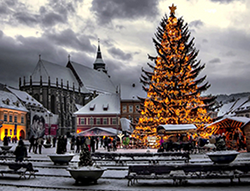

Los Principados Unidos surgieron cuando los principados de Moldavia y Valaquia se unieron bajo el príncipe Alexandru Ioan Cuza en 1859. En 1881, Carol I de Rumania se coronó, formando el Reino de Rumania. Su independencia del Imperio otomano fue declarada el 9 de mayo de 1877 y fue reconocido internacionalmente al año siguiente. Al final de la Primera Guerra Mundial, Transilvania, Bucovina y Besarabia fueron anexionadas por el Reino de Rumania como resultado de la Guerra Civil Rusa, en la que Rumania fue una de las 14 naciones que invadió el territorio soviético desde 1918.
con estas anexiones se dio inicio a lo que la monarquía rumana denominó la Gran Rumania. Durante la década de 1930 el gobierno, con Ion Gigurtu como Primer Ministro, derivó de una posición inicial proclive al Reino Unido y Francia, hacia una posición alineada militar y políticamente con la Alemania Nazi, implementando el antisemitismo de manera oficial en el país. En 1940, la región de Besarabia, ocupada por Rumania durante la Guerra Civil Rusa, fue reclamada por la Unión Soviética, que tras varias dilaciones fue aceptado, pero que según diversas causas, que varían según las fuentes, llevaron al enfrentamiento de algunas divisiones rumanas con el Ejército Rojo, que las derrotó duramente, lo que llevó a la incorporación de Besarabia a la Unión Soviética como R.S.S. de Moldavia, incluyendo el territorio de Transnistria. Al comienzo de la Segunda Guerra Mundial, el exministro de Guerra, Ion Antonescu, implantó una dictadura militar fascista, en la que alineó el ejército rumano a la Wehrmacht, permitiendo el acantonamiento de gran número de divisiones de la misma, con vistas a la Operación Barbarroja, de invasión de la Unión Soviética. Desde junio de 1941 hasta 1944, Rumania participó en la guerra del lado de las potencias del eje, bajo la dirección militar de Alemania. En 1944, bajo la contraofensiva soviética que penetró en su territorio, cambió de bando y se unió formalmente a los Aliados, cayendo la dictadura militar de Antonescu.
al final de la guerra, algunos territorios del noreste anteriormente de Rumania fueron ocupados temporalmente por la URSS, con unidades del Ejército Rojo estacionadas en territorio rumano y el país acabó convirtiéndose en una República Socialista y miembro del Pacto de Varsovia.
con la caída del bloque socialista europeo y la llamada Revolución de 1989 por los medios occidentales, Rumania inició su transición hacia la democracia representativa occidental y una economía de mercado capitalista.
después de una década de problemas por las privatizaciones masivas y la llamada revolución poseconómica, así como el deterioro de los estándares de vida que provocó una masiva emigración hacia los países del entorno, se llevaron a cabo amplias reformas que impulsaron la recuperación económica.Desde 2010, Rumania es un país de ingresos relativamente altos, con un alto índice de desarrollo humano.5 Rumania se unió a la OTAN el 29 de marzo de 2004, y la Unión Europea el 1 de enero de 2007. También es miembro de la Unión Latina, la Francofonía, la OSCE, la OMC, la BSEC y las Naciones Unidas. Hoy en día, Rumania es un Estado unitario con una república semipresidencial, en la que el poder ejecutivo se compone del Presidente y del Gobierno. Rumania, junto a Moldavia, son los únicos países de Europa Oriental cuyas lenguas son romances.
en 2002, los más antiguos restos humanos (homo sapiens sapiens) de Europa fueron encontrados en Peștera cu Oase, cerca de Anina, en la actual Rumania. Los restos (una mandíbula) datan de aproximadamente 42 000 años y recibieron el apodo de "Juan de Anina" (Ion din Anina). Como los restos europeos más antiguos de Homo sapiens, podrían representar a los primeros hombres que entraron en el continente.
los restos son interesantes especialmente porque presentan una mezcla de rasgos arcaicos, de hombre moderno temprano, y de neanderthal, indicando una posible mixtura entre el Neanderthal y el hombre moderno. Desde el Paleolítico, el actual territorio de Rumania fue escenario del desarrollo de varias comunidades culturales. Las pruebas escritas más viejas de la presencia de un pueblo en territorios de la actual Rumania vienen de Heródoto, en 513 a. C.21 Antes de la conquista romana, la región estaba poblada por tribus de origen dacio, indoeuropeo, que dieron al país su nombre prerromano, Dacia. Su líder más célebre fue Decébalo, aunque el primer líder que unió a las tribus dacias fue Burebista. Una parte de Dacia fue conquistada por Trajano y su ejército en el año 107 (guerras 101-102 y 105-106). Es posible que una parte importante de la población autóctona fuese masacrada durante la campaña de conquista o, tal vez, asimilada o dispersada, lo que dio lugar a su sustitución con colonos romanos. A pesar de todo, permaneció una población significativa de "dacios libres" en los territorios no conquistados por los romanos. Las Guerras Dacias son inmortalizadas en la Columna de Trajano, del Foro de Trajano en Roma.